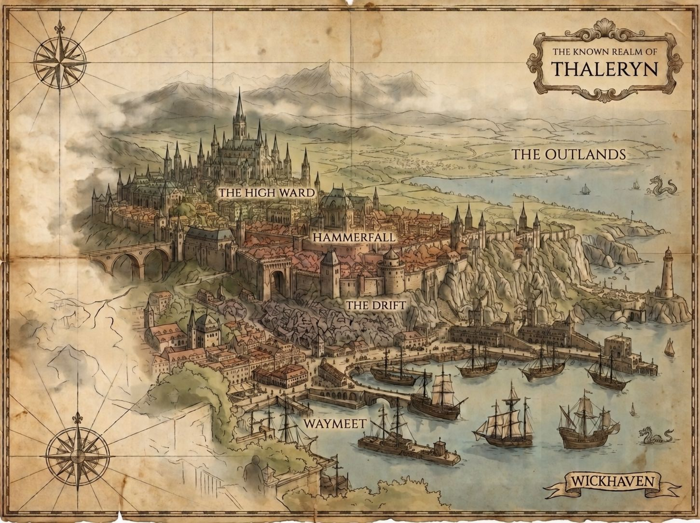

Wickhaven and the Conclave
The hub city of Thaleryn: walls, a harbor, four guilds that share power, and an older city buried underneath.


The lay of the land
The High Ward
On the heights, crowned with spires, with the mountains behind it.
Hammerfell
The crowded heart of the walled city, below the High Ward.
The Drift
Tumbled down the rocky slope beneath the city walls.
Waymeet
Down at the water, where the harbor, the city and the roads meet.
Past the walls, farmland runs out toward the Outlands, and a lighthouse watches the point at the harbor mouth.
The city
Walls and the City Gates
Every newcomer arrives through the gates, and every traveler is announced.
The harbor and the Pier
On the water side, bringing ships, merchants and goods. The Pier's waters have fed the city for generations.
Farmland
Fields and hedgerows outside the walls, slowly giving way to wilderness.
The roads out
Roads run from the city into the Outlands, the wild lands beyond the city's protection.
Wickhaven is a frontier city: big enough for guilds, markets and a temple, young enough that the land past its farms is mostly unmapped. See Places of Wickhaven for where everything is.
The Conclave
Wickhaven is governed by the Conclave. Each of the four founding guilds sends one representative, and each guild runs its own district under its own rules. No guild can decide for the whole city alone, and their rivalries play out openly at the Conclave table.
| District | Guild | Known for |
|---|---|---|
| Waymeet | The Wayfarers Guild | Contracts, companions, guides and rumors; where the city, the harbor and the roads meet |
| High Ward | The Magisterium | Study, preservation and the responsible use of knowledge |
| Hammerfell | The Hand & Hammer | The crafts and trade that keep the city running |
| The Drift | The Unbound | Sorcerers and innate magic, answering to no one |
| Lowside | No guild | Gambling, black markets, and something very old underneath |
Lowside has no guild and no Conclave seat. Who speaks for it, if anyone, is an open question.
Players at the table
The Conclave's seats will be held by actual players, chosen by players. Reputation decides who takes part:
How elections run is still being decided. See Reputation.